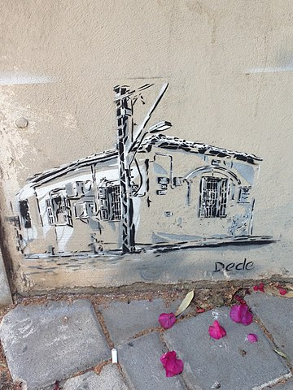
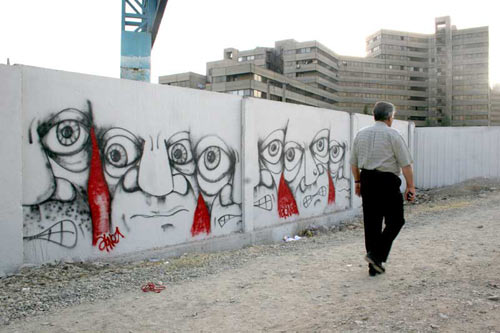

Graffiti in the Middle East is emerging slowly, with pockets of taggers operating in the various 'Emirates' of the United Arab Emirates, in Israel, and in Iran. The major Iranian newspaper Hamshahri has published two articles on illegal writers in the city with photographic coverage of Iranian artist A1one's works on Tehran walls. Tokyo-based design magazine, PingMag, has interviewed A1one and featured photographs of his work. The Israeli West Bank barrier has become a site for graffiti, reminiscent in this sense of the Berlin Wall. Many graffiti artists in Israel come from other places around the globe, such as JUIF from Los Angeles and DEVIONE from London. The religious reference "נ נח נחמ נחמן מאומן" ("Na Nach Nachma Nachman Meuman") is commonly seen in graffiti around Israel.
 